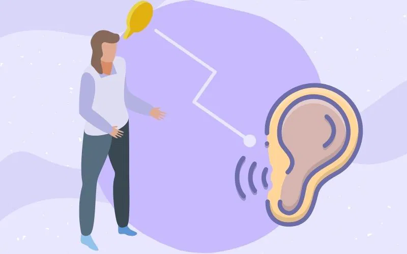

In a world filled with constant distractions and overwhelming noise, the art of listening has become increasingly rare. Yet, effective communication hinges on our ability to listen, not just hear, the words of others. Being a good listener is more than just a passive activity; it is an active, engaged process that requires patience, empathy, and mindfulness. Listening is an essential skill that strengthens relationships, fosters understanding, and builds trust. Whether in personal or professional settings, being a good listener can profoundly impact the quality of your interactions and the depth of your connections. Listening goes beyond simply allowing someone to speak. It involves giving your full attention, processing the information being shared, and responding thoughtfully. When you listen well, you demonstrate respect for the other person’s perspective, validate their feelings, and create a safe space for open and honest dialogue. In contrast, poor listening can lead to misunderstandings, conflict, and feelings of alienation. This article will explore eight tips on how to become a good listener. By applying these strategies, you can enhance your listening skills, improve your communication, and strengthen your relationships. From maintaining eye contact to practicing empathy, these tips will help you cultivate the art of listening in a way that is meaningful and impactful.
Maintaining eye contact is one of the most fundamental aspects of being a good listener. Eye contact communicates to the speaker that you are present, engaged, and interested in what they are saying. It helps establish a connection and shows that you value the conversation.
Why It Matters: Eye contact signals that you are giving your full attention to the speaker. It also allows you to pick up on nonverbal cues, such as facial expressions and body language, which can provide additional context to the speaker’s words.
How to Practice: Aim to maintain natural eye contact throughout the conversation. This doesn’t mean staring intensely, but rather, looking at the speaker with a relaxed and open gaze. If you find it challenging to maintain eye contact, practice in low-pressure situations, such as casual conversations with friends or family.
Cultural Sensitivity: It’s important to be aware that eye contact norms vary across cultures. In some cultures, direct eye contact may be seen as disrespectful or confrontational. Being mindful of these differences can help you adapt your listening approach in multicultural settings.
In today’s fast-paced world, distractions are everywhere, from smartphones to background noise. Eliminating distractions is crucial to being a good listener because it allows you to focus entirely on the conversation at hand.
Why It Matters: Distractions can cause you to miss important details or lose track of the conversation. When you are distracted, the speaker may feel that you are not interested in what they are saying, which can damage trust and rapport.
How to Practice: Before engaging in a conversation, take a moment to eliminate potential distractions. Put your phone on silent or place it out of reach, turn off the television, and choose a quiet environment if possible. If you are in a noisy or chaotic setting, acknowledge the challenge and suggest moving to a more conducive space.
Mindfulness: Practicing mindfulness can help you stay present and focused during conversations. When your mind starts to wander, gently bring your attention back to the speaker and the conversation. This practice can improve your ability to listen attentively over time.
One of the most important aspects of being a good listener is allowing the speaker to express themselves fully without interruption. Interrupting can disrupt the flow of the conversation and make the speaker feel unheard or disrespected.
Why It Matters: Interrupting can create a power imbalance in the conversation, where the speaker feels that their thoughts are less important. It can also lead to misunderstandings if you jump to conclusions before the speaker has finished.
How to Practice: Practice patience and self-control by allowing the speaker to complete their thoughts before responding. If you feel the urge to interrupt, take a deep breath and remind yourself that listening is about understanding, not about being the first to respond.
Reflective Listening: After the speaker has finished, use reflective listening to confirm your understanding. This involves summarizing what the speaker has said and asking for clarification if needed. Reflective listening shows that you were paying attention and helps prevent miscommunication.
Empathy is the ability to understand and share the feelings of another person. When you listen with empathy, you not only hear the words being spoken but also connect with the emotions behind them.
Why It Matters: Empathy allows you to create a deeper connection with the speaker. It shows that you care about their experience and are willing to see things from their perspective. This can lead to greater trust and openness in the relationship.
How to Practice: Practice putting yourself in the speaker’s shoes. Consider how they might be feeling and respond in a way that acknowledges their emotions. Phrases like “I can see that this is really important to you” or “It sounds like you’re feeling frustrated” can demonstrate empathy and validate the speaker’s feelings.
Nonverbal Cues: Use nonverbal cues, such as nodding or leaning slightly forward, to show that you are engaged and empathetic. These cues can convey that you are not only listening but also emotionally attuned to the conversation.
Asking open-ended questions is a powerful way to encourage the speaker to share more and dive deeper into the conversation. Unlike closed-ended questions that require a simple yes or no answer, open-ended questions invite the speaker to elaborate on their thoughts and feelings.
Why It Matters: Open-ended questions show that you are genuinely interested in the speaker’s perspective. They also help to keep the conversation flowing and can lead to a more meaningful and insightful exchange.
How to Practice: Instead of asking questions that can be answered with a single word, try to phrase your questions in a way that encourages elaboration. For example, instead of asking, “Did you like the movie?” you could ask, “What did you think of the movie?” This invites the speaker to share their opinions and experiences more fully.
Follow-Up Questions: Don’t be afraid to ask follow-up questions based on the speaker’s responses. This shows that you are actively listening and interested in learning more about their thoughts.
Active listening is a technique that involves fully concentrating, understanding, responding, and remembering what the speaker is saying. It is an essential skill for effective communication and helps ensure that both parties are on the same page.
Why It Matters: Active listening prevents misunderstandings and ensures that you are fully engaged in the conversation. It also shows respect for the speaker and helps build stronger, more meaningful connections.
How to Practice: To practice active listening, focus on the speaker’s words and avoid thinking about your response while they are talking. Instead, concentrate on understanding their message and the emotions behind it. After they have finished speaking, paraphrase what you heard and ask if you understood correctly.
Verbal Cues: Use verbal cues, such as “I see,” “That makes sense,” or “Tell me more,” to demonstrate that you are actively listening. These cues encourage the speaker to continue sharing and let them know that you are engaged in the conversation.
Being a good listener requires patience and an open mind. It’s important to listen without passing judgment or jumping to conclusions, especially when the speaker’s views differ from your own.
Why It Matters: Judging or rushing the speaker can create a defensive atmosphere and hinder open communication. When you approach the conversation with patience and without judgment, you create a safe space for the speaker to express themselves honestly and openly.
How to Practice: When listening to someone, remind yourself that your role is to understand, not to judge or critique. Give the speaker time to articulate their thoughts, even if they take longer to express themselves or struggle to find the right words. Avoid interrupting or finishing their sentences, as this can come across as impatient or dismissive.
Open-Mindedness: Practice open-mindedness by considering the speaker’s perspective, even if it challenges your own beliefs or opinions. Approach the conversation with curiosity and a willingness to learn, rather than with preconceived notions or biases.
Good listening also involves providing constructive feedback when appropriate. This doesn’t mean offering unsolicited advice, but rather responding in a way that supports and encourages the speaker.
Why It Matters: Constructive feedback helps the speaker feel understood and validated. It also contributes to a balanced conversation where both parties feel heard and respected.
How to Practice: When offering feedback, focus on being supportive and positive. Use “I” statements to express your thoughts, such as “I noticed that you seemed upset when you talked about that,” rather than making assumptions or judgments. Keep your feedback concise and relevant to the conversation.
Balancing Feedback: It’s important to balance your feedback with active listening. Ensure that your feedback is based on what the speaker has shared, rather than on your own assumptions or interpretations. This demonstrates that you are truly listening and responding to their needs.
Becoming a good listener is a skill that requires conscious effort and practice. In a world where distractions are abundant and attention spans are short, the ability to listen deeply and empathetically is more valuable than ever. By incorporating the eight tips outlined in this article—maintaining eye contact, eliminating distractions, listening without interrupting, showing empathy, asking open-ended questions, practicing active listening, being patient and non-judgmental, and providing constructive feedback—you can enhance your listening skills and improve your communication with others. Good listening is not just about hearing words; it’s about understanding the speaker’s message, emotions, and intentions. It’s about creating a space where the speaker feels safe to share, knowing that they will be heard and respected. When you listen well, you strengthen your relationships, foster mutual understanding, and build trust. As you work on becoming a better listener, remember that it’s a journey, not a destination. Each conversation is an opportunity to practice and refine your listening skills. With time and dedication, you’ll find that being a good listener not only improves your relationships but also enriches your own life. Listening well opens the door to deeper connections, greater empathy, and a more profound understanding of the world around you. So, the next time you engage in a conversation, challenge yourself to listen with your full attention, an open heart, and a mind free of distractions. By doing so, you’ll not only become a better listener but also a more compassionate and understanding person.